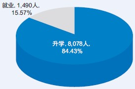
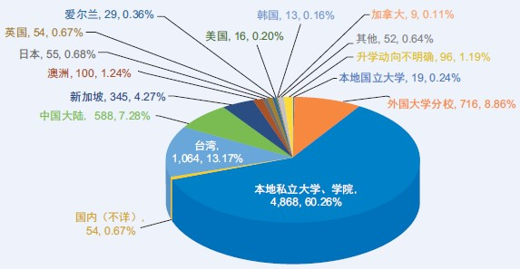
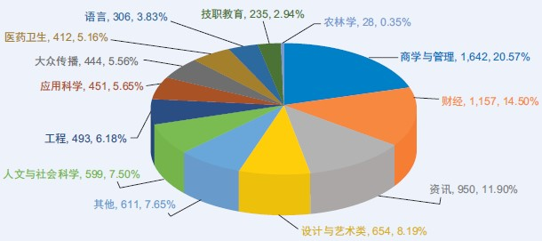

全国华文独中和关丹中华中学
2021年毕业生升学概况调查
本调查是为了解全国独中和关丹中华中学毕业生的升学率和就业率，以及国内外大专院校升学分布等情况。于2023年4月向各校发放62份问卷，12月下旬完成回收62份，回收率达100%。经过汇整及剔除无效问卷，以59所学校共9,568名毕业生的数据作统计分析1。
2021年毕业生升学数据重点摘录：
1. 升学率为84.43%；
2. 选择在国内升学的学生居多，达70.03%；国外升学则为28.78%；
3. 赴国外升学首选前3名依序为台湾、中国、新加坡；
4. 科系类别前3名为“商学与管理”、“财经”和“资讯”。
毕业生升学与就业概况
在2021年的毕业生当中，高达84.43%（8,078人）的学生选择继续升学，而15.57%（1,490人）的学生则进入职场就业。
表1：2021年毕业生升学与就业情况
| 学生人数（人） | 百分比 | |
|---|---|---|
| 升学 | 8,078 | 84.43% |
| 就业 | 1,490 | 15.57% |
| 合计 | 9,568 | 100% |
图1：2021年毕业生升学与就业概况

受疫情影响下，许多国家严管入境，学生只能通过远程上课的方式进行学习，致使大部分毕业生在完成高中教育后，偏向于选择在本地高等学府继续学业。因此，国内升学率达70.03%（5,657人），较2020年提高7.23%（62.80%，2020年）。选择到国外留学的学生则占28.78%（2,325人）。
国内升学概况
由于国内私立高等学府几乎都接受独中统考证书作为入学申请资格的凭证，因此私立大学、大学学院、学院依然是学生的首要选择，占国内升学人数的60.26%（4,868人）；而国内升学的第二选择则是外国大学在马分校，占8.86%（716人）。此外也有0.24%（19人）的学生设法衔接到国立大学。
海外升学概况
赴海外升学的2021年毕业生仍以中文源流国家／地区为主，选择到台湾和中国大陆升学者共占海外升学人数的71.05%，赴台湾升学者占45.76%（1,064人），而赴中国大陆升学者则占25.29%（588人），两者之间相差20.47%。其中因素相信是因入境中国大陆、返校、复课等方面进展仍不明朗，学生进而选择放弃申请赴华深造。
排名第三至第五名是新加坡、澳洲和日本，排名第十一起为德国、新西兰、香港特区、印尼、西班牙、澳门特区、泰国、匈牙利、法国、瑞士、荷兰。以下图表只显示首十名较多学生选择的国家／地区之人数和百分比。
表2：2021年毕业生国内外升学分布百分比
| 类别 | 人数 | 占总升学人数的％（8,078人） | 占国内升学人数的％（5,657人） |
|---|---|---|---|
| 国内升学 | 5,657 | 70.03% | |
| 私立大学、学院 | 4,868 | 60.26% | 86.05% |
| 外国大学分校 | 716 | 8.86% | 12.66% |
| 国立大学 | 19 | 0.24% | 0.34% |
| 国内（不详） | 54 | 0.67% | 0.95% |
| 类别 | 人数 | 占总升学人数的％（8,078人） | 占国外升学人数的％（2,325人） |
|---|---|---|---|
| 海外升学 | 2,325 | 28.78% | |
| 台湾 | 1,064 | 13.17% | 45.76% |
| 中国大陆 | 588 | 7.28% | 25.29% |
| 新加坡 | 345 | 4.27% | 14.84% |
| 澳洲 | 100 | 1.24% | 4.30% |
| 日本 | 55 | 0.68% | 2.37% |
| 英国 | 54 | 0.67% | 2.32% |
| 爱尔兰 | 29 | 0.36% | 1.25% |
| 美国 | 16 | 0.20% | 0.69% |
| 韩国 | 13 | 0.16% | 0.56% |
| 加拿大 | 9 | 0.11% | 0.39% |
| 其他国家／地区 | 52 | 0.64% | 2.24% |
| 升学地区不明确 | 96 | 1.19% | |
| 升学总人数：8,078人 | |||
图2：2021年毕业生国内外升学分布百分比

科系类别排行榜2
在选择科系类别方面，“商学与管理”类仍是毕业生的首选，其次为“财经”，前两名皆属于“商管类”科目；排在第三类别的则是“资讯”类。
表3：2021年毕业生就读类别人数及百分比
| 序 | 类别 | 人数 | 百分比 |
|---|---|---|---|
| 1 | 商学与管理 | 1,642 | 20.57% |
| 2 | 财经 | 1,157 | 14.50% |
| 3 | 资讯 | 950 | 11.90% |
| 4 | 设计与艺术类 | 654 | 8.19% |
| 5 | 其他 | 611 | 7.65% |
| 6 | 人文与社会科学 | 599 | 7.50% |
| 7 | 工程 | 493 | 6.18% |
| 8 | 应用科学 | 451 | 5.65% |
| 9 | 大众传播 | 444 | 5.56% |
| 10 | 医药卫生 | 412 | 5.16% |
| 11 | 语言 | 306 | 3.83% |
| 12 | 技职教育 | 235 | 2.94% |
| 13 | 农林学 | 28 | 0.35% |
图3：2021年毕业生就读类别人数及百分比

类别与科系一览表：
| 序 | 类别 | 科系 |
|---|---|---|
| 1 | 资讯 | 多媒体、资讯工艺、资讯系统管理、电脑科学、通讯／电讯 |
| 2 | 工程 | 工程学、化学工程、建筑工程、电机／电子工程、机械工程、土木工程、材料工程、环境工程、宇航／飞机工程 |
| 3 | 应用科学 | 应用化学、应用物理、物质科学、地理／环境科学、生物科学／生物化学／遗传学、数学／统计学／科学、精算学 |
| 4 | 医药卫生 | 物理治疗／医药科技、牙科、药剂、医学／中医、护理／社区卫生、生物医学／兽医学、食品／营养学／保健 |
| 5 | 设计与艺术类 | 平面／视觉设计、动画／游戏设计、网页设计、室内设计、工业设计、广告设计、服装设计、美术、音乐／舞蹈／戏剧 |
| 6 | 人文与社会科学 | 心理、社工、辅导与咨询、教育、幼儿教育、特殊教育、哲学、历史、社会学、政治、法律 |
| 7 | 大众传播 | 电视／电影制作、摄影、大众传播、新闻、广播、广告／创意媒体 |
| 8 | 语言 | 中文、英语、日语、韩语、其他语文、翻译 |
| 9 | 商学与管理 | 管理学／行政管理、工商管理、人力资源与管理、物流管理、地产管理、酒店管理、餐饮管理、旅游管理、航空管理、市场营销、秘书 |
| 10 | 财经 | 金融／银行、国际商务、会计、经济学、电子商务 |
| 11 | 农学 | 农学／林学／水产养殖、园艺／植物保护、森林资源／农业资源 |
| 12 | 技职教育 | 糕点制作／烘焙、厨艺／烹饪、美容、身体护理／纤体、造型设计／彩妆、美发、美甲、汽车维修／工艺、空服员训练 |
| 13 | 其他 | 其他 |
1数据与分析限制
1. 有3所独中的数据有欠完整，故被列为无效数据，不予以计算；
2. 59份有效问卷共收集到10,981名毕业生数据，唯其中1,413名毕业生数据被列为无效数据，不予以计算。↩
2由于96名升学地区不明确者皆无就读科系资料，因此在“科系类别”的统计上仅以7,982人计算。↩